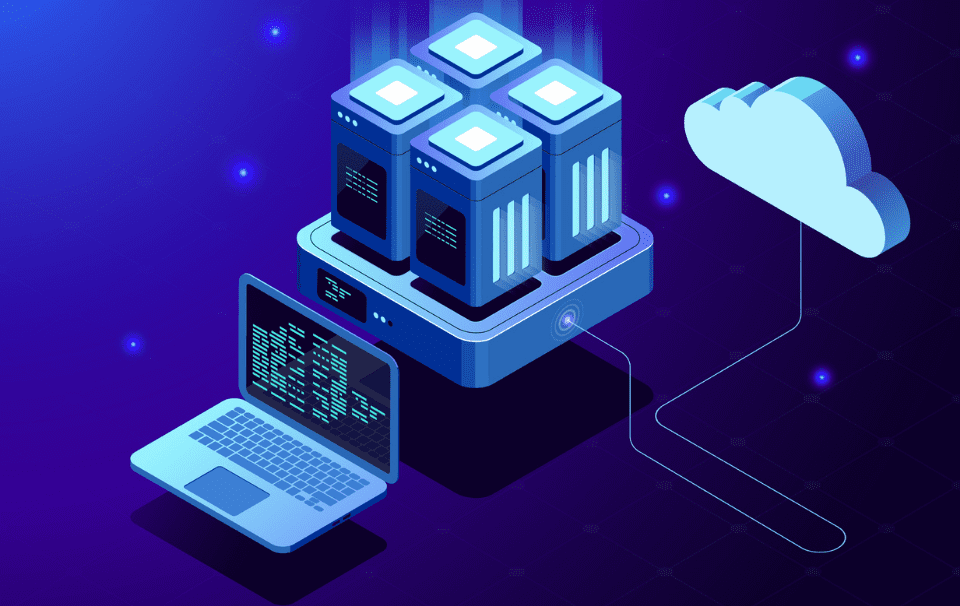

Servidores Físicos
Un servidor físico es una máquina física dedicada exclusivamente a gestionar diversas aplicaciones y servicios de red. Estos servidores requieren hardware especializado y son instalados en centros de datos. Son ideales para empresas que manejan grandes volúmenes de datos o tráfico intensivo.
Servidores Virtuales
Un servidor virtual es una partición de un servidor físico que actúa como un servidor independiente. Los servidores virtuales permiten a varias máquinas virtuales compartir el mismo hardware, optimizando los recursos y reduciendo costos.
Servidores Cloud
Los servidores en la nube (Cloud Servers) están alojados en centros de datos de terceros y se acceden a través de internet. Son altamente escalables y no dependen de un hardware físico específico, lo que los convierte en una opción flexible y económica.
